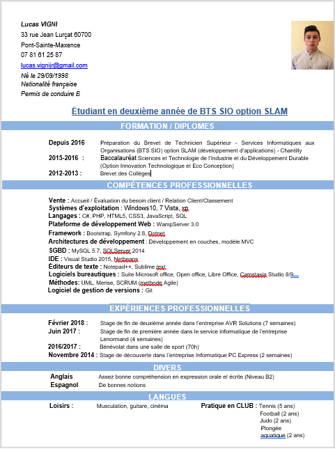

Je m’appelle VIGNI Lucas, âgé de 19 ans, je suis actuellement en deuxième année de BTS SIO (Services Informatiques aux Organisations) au lycée Jean Rostand à Chantilly.
J’ai tout d’abord commencé par faire un BAC STI2D option ITEC(Innovation technologique et éco-conception), au lycée Jean Rostand à Chantilly. L'informatique me passionne depuis petit, le plaisir d'acquérir des connaissances sur l'informatique ne me lasse pas, c'est pourquoi je me suis orienter vers ces études. Grâce à mes stages, j’ai pu approfondir mes compétences dans le domaine du développement d'application, mais aussi dans le domaine du développement web. Durant ma première année de BTS SIO, j’ai opté pour l’option SLAM. Ce sourire que nous avons après un projet terminé , cette entraide m'a tout de suite plus , c’est pourquoi je me suis dirigé vers cette branche.
Si vous souhaitez obtenir mon CV au format PDF, cliquez ici.
Mesurer la progression du développement d’un logiciel à l’aune de ses lignes de code revient à mesurer la progression de la construction d’un avion à l’aune de son poids
© 2018. All rights reserved | Design by Vigni